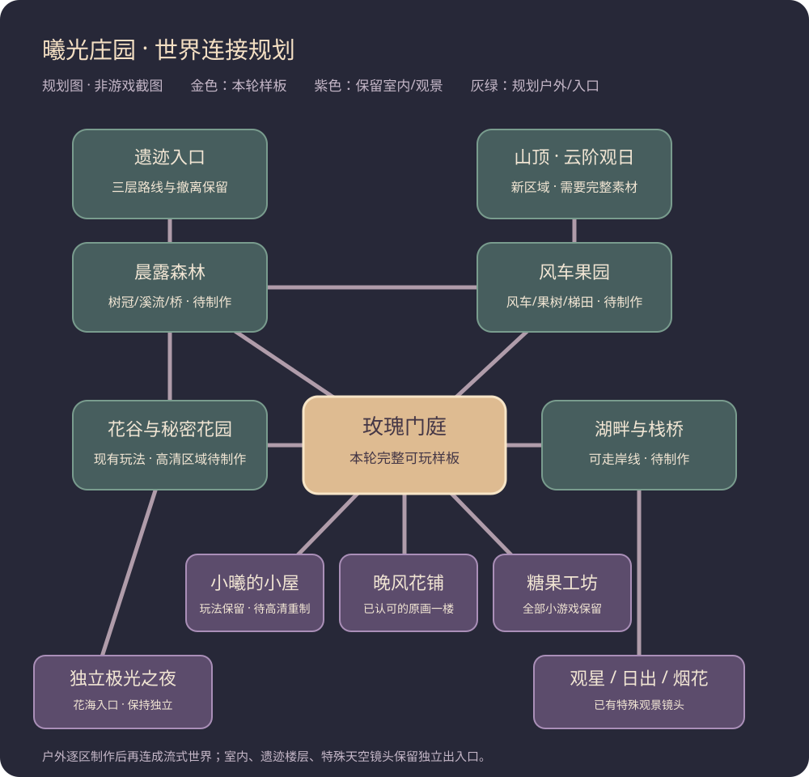

全世界重制规划 · 第一阶段
目标仍是重制整个庄园。本轮门庭用于验证可复用制作方式，不把项目缩成只有一个区域。
总体连接示意
下面是规划图，不是已经制作好的世界地图或游戏截图。森林、果园、山顶仍待制作；紫色入口接回现有玩法。

统一制作规范
3/4俯视；奶油金、雾紫、暖木与鼠尾草绿；光从左上照来，阴影向右下。新建筑约300～500世界单位高，保留小曦原角色身份，后续需专门制作高细节动作图集。所有图片等比缩放，保持清晰像素边缘。
地形、道路/岸线、阴影、可碰撞物件、脚底Y排序、屋顶/树冠前景、稀疏动态与UI分层。每件可互动对象有稳定ID、图片帧、脚底占地、可达站位和动作；不能靠图片猜碰撞。
户外区域验收后逐步做边缘预加载和无缝连接。室内、遗迹楼层、抬头观星与独立极光保留出入口。纯地形层加独立物件，不拼接完整房间原画当大地图。
按区域执行
- 玫瑰门庭：本轮样板，可行走与采花，接通所有主要既有入口。
- 花谷、晨露森林：花簇与生长、树干/树冠、溪流与桥。
- 湖畔、栈桥与远山：可走岸线、局部倒影和分层远景。
- 风车果园与山顶：风车叶片、收获果树、山路和观日平台。
- 晚风花铺：保留已认可原画；二楼需补干净背景和遮挡后再开放。
- 小屋及糖果工坊：无家具底板、精细家具/工具图集与使用帧，保留全部交易及布置。
- 遗迹三层：墙地材质、机关危险帧、宝箱开合与出口，原随机/临时背包/结算不变。
仍缺少的26类正式PNG
以下全部标记为待制作，不以粗糙几何占位替代。人物、昼夜专用变体及可无缝过渡的地形也是正式缺口。
| 区域 | 文件与建议尺寸 | 要求 |
|---|---|---|
| 主世界 | terrain_transition_atlas.png2048×2048 | 石路/泥路/草边/岸线/台阶全套过渡，随机细节不形成方格 |
| 主世界 | gate_wall_fence.png1536×1024 | 主门、围墙转角、篱笆、开门帧，前后图层分离 |
| 主世界 | building_roof_wall_layers.png2048×2048 | 三栋建筑屋顶/墙体/门开合/夜间窗灯完整独立层 |
| 花谷 | flower_growth_atlas.png2048×2048 | 至少五种花的空地/幼苗/花苞/盛开/采后状态及近中远簇 |
| 花谷 | picnic_swing_baskets.png1536×1024 | 长椅/秋千/野餐毯/花篮结构完整且前景栏杆独立 |
| 花谷 | butterfly_animation.png512×512 | 飞行、停驻、振翅帧，风格统一 |
| 森林 | oak_trunk_canopy.png1024×1024 | 树干、树根、树冠分别透明层，精修细叶边缘 |
| 森林 | birch_fir_forest.png1536×1536 | 桦木/杉木/蕨类/树洞/枯木，俯视透视一致 |
| 森林 | stream_bridge_tiles.png1536×1024 | 溪水弯道/浅滩/木桥中段/栏杆前景及碰撞锚点 |
| 湖畔 | shore_pier_layers.png2048×1024 | 自然连续岸线、石滩、芦苇、栈桥与可遮挡栏杆 |
| 湖畔 | mountain_depth_layers.png2048×1536 | 远中近山脊/树线/岩面/晨雾，各四时段受光变体 |
| 湖畔 | water_reflection_masks.png1024×1024 | 天空/远山/窗灯对应的反射遮罩与水纹 |
| 果园 | windmill_layers.png1024×1024 | 风车塔身、叶片、轮轴与前后遮挡 |
| 果园 | fruit_trees.png1536×1024 | 果树、独立果实、收获帧、梯田与围栏 |
| 山顶 | summit_rocks_stairs.png2048×1536 | 山路、岩阶、观景平台、悬崖面及云层 |
| 小屋 | home_empty_shell.png1536×1536 | 无家具墙地底板，窗玻璃/窗框/窗帘分层 |
| 小屋 | home_furniture_atlas.png2048×2048 | 床/柜/沙发/桌椅/钢琴/灯/花瓶/猫窝；接地阴影、翻转及使用帧 |
| 工坊 | candy_empty_shell.png1536×1536 | 无家具墙地底板与分层窗灯 |
| 工坊 | candy_counter_tools.png2048×1536 | 玻璃柜、罐、剪刀、丝带、烤炉和搅拌操作帧 |
| 工坊 | candy_recipe_ui.png1024×1024 | 糖果、配方、结果、包装收藏品级图标 |
| 遗迹 | ruins_walls_floor_atlas.png2048×2048 | 三层石材差异、墙体厚度、破损、苔藓、拱门、柱、壁画 |
| 遗迹 | ruins_chest_animation.png1024×1024 | 锁扣/箱盖/内部/战利品/辉光完整帧及独立前景 |
| 遗迹 | ruins_mechanism_hazards.png1536×1024 | 机关预警/触发/恢复，危险可辨；出口阶梯 |
| 角色 | xiaoxi_detailed_walk.png256×320 | 原发型和服装身份的64×80四向各4帧，脚底与装备锚点 |
| 角色 | xiaoxi_actions.png1024×1024 | 坐下/采花/钓鱼/持灯等动作，身份不变 |
| 全区域 | dawn_day_dusk_night_variants.png2048×2048 | 同机位材质受光变体，非全屏色层 |
存档与手机保护
保留单存档和旧坐标，新增世界位置只作单独偏好记录；不存第二套货币/物品。家具保留室内局部坐标，正式迁移前以版本和稳定门口ID映射。地图按片区加载，图集低于手机常见2048纹理上限，反复进入复用；减少动态时关闭装饰性运动，保持核心画面清晰。
每个阶段都要实际手机视口截图和触屏/碰撞/遮挡/出入口/断网重开验收。当前仍未宣称全地图达到原画完成度。